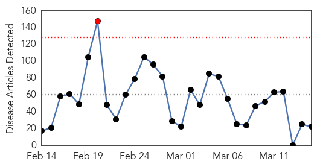
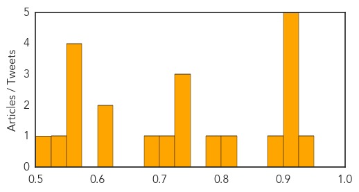
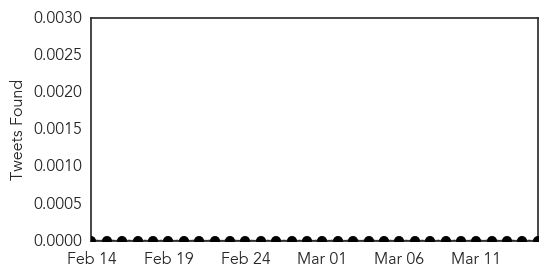
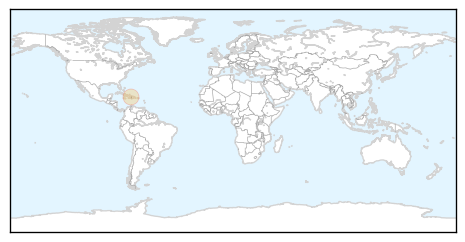

Unknown
30-Day Web Trend
1 alerts, 0 warnings

30-Day Twitter Trend
0 alerts, 0 warnings

Article Locations

Article Confidences
Top Articles:
- 0.927
- ​Parents, schools and GP's warned to be on high alert as scarlet fever cases set to peak
- 0.917
- Chicago Tribune
- 0.917
- Chicago Tribune
- 0.917
- Chicago Tribune
- 0.917
- Chicago Tribune
- 0.917
- Chicago Tribune
- 0.878
- Six common fever myths explained
- 0.803
- Bird flu alert sounded in Amethi
- 0.785
- Bird flu alert sounded in Amethi
- 0.742
- Avian flu scare: 750 birds culled in Amethi dist
- 0.735
- Midge study helps understanding of African horse sickness
- 0.730
- Deport illegal workers to stop TB from spreading
- 0.712
- Listeria-tainted ice cream linked to 3 deaths in Kansas - National
- 0.693
- Yemen's political factions unite to counter Houthi takeover
- 0.618
- Three deaths linked to tainted ice cream in Kansas, prompting recall
- 0.605
- Mugabe and his CIO must bring back Itai Dzamara, NOW
- 0.571
- Malaysia General Business Sports and Lifestyle News
- 0.556
- Health care for blood disease improves
- 0.554
- Cartersville Medical Center Wants To Help You Stop Smoking
- 0.550
- 3 Day Polio Vaccination Campaign Begins in Kabul
- 0.533
- Should we lock antibiotics away?
- 0.518
- Marler - The Food Safety Lawyer - Update On Blue Bell Ice Cream Listeria Outbreak
Top Tweets:
- 0.746
- @GloryPao726: Recuerda que la mente controla el cuerpo, y no viceversa. Tiene un poco de viceversa también.
- 0.711
- @GloryPao726: @danieljdejesus prefiero creer en las causalidades 😊 Después que no caigas en la trampa de la superstición vas a estar bien.
- 0.534
- Escupir en la boca de tu bebé en realidad le aumenta las defensas inmunológicas. Deja la ignorancia; abraza a la naturaleza.
Chikungunya
30-Day Web Trend
0 alerts, 0 warnings

30-Day Twitter Trend
1 alerts, 0 warnings

Article Locations
Article Confidences

Top Articles:
Top Tweets:
-
No tweets found for Mar 15, 2015